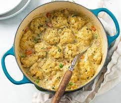

Chicken and Dumplings

Description
This is one of my favorite recipes I have stumbled upon on the web.
If you aren't all too familiar with it, this is a bit of a soup with biscuits
topped over. Sorta, like a chicken potpie with biscuit, instead of crust.
This warms any winter day and fill any craved stomach.
Ingredients
- 2 tbs olive oil
- 2 lbs Chicken Breast, 1 in. cubed
- 1 large diced yellow onion
- 1 cup diced carrots
- 3 cloves minced Garlic
- salt & pepper, to desired
- 5 tbs unsalted butter
- 6 tbs all purpose flour
- 6 cups chicken broth
- 1/2 cup heavy cream
- 1/2 tsp dried thyme
- 2 bay leaves
- 1 1/2 cups frozen peas
- 4 tbs fresh minced parsley
Dumplings
- 2 cups all-purpose flour
- 1 tbs baking powder
- 1/2 tsp salt
- 1/2 tsp black pepper
- 1 1/3 cups heavy cream
Steps
- Heat a 6-quart dutch oven, pour olive oil
and brown the chicken breasts. Once browned,
remove chicken from pot and place to the side.
- Place 2 tbs of oil and saute onion and carrots
combined until fragrant and tender(5 mins). Pla
ce on low heat and add garlic, lightly stirring for
2 minutes. Add any seasons of desire at this point,
or stick to just salt and pepper.
- Add butter to the pot melting and coating before
pouring flour evenly to create a thick roux.
Make sure to sure constantly, preventing clumping for 2 minutes.
Add chicken and drippings, stirring and scrapping loose the sugars
at the bottom of the pan for 3 minutes, while loosening the roux and
coat the chicken.
- Now, add broth, cream, thyme and bay leaves to pot. Raise the heat to
medium-high to bring the soup to a simmer, proceeding
to add frozen peas and cover. Leave this to cook for 15 minutes while
prepping dumplings.
- In a large bowl, add dry ingredients for dumplings, whisk to evenly
distribute. Once combined, add heavy cream and stir lightly to form a
large mass. Using your hands, incorporate any dry ingredients
into the mass without kneading. Pull bits from mass and roll
into 2 inch balls of dough until, none of the mass is left.
- Place the balls of dough, evenly spaced, into pot of soup, coating the
top with parsley and covering with lid to cook for 15 minutes, or until
dough is cooked.
- Once done, laddle helpings to liking and enjoy!